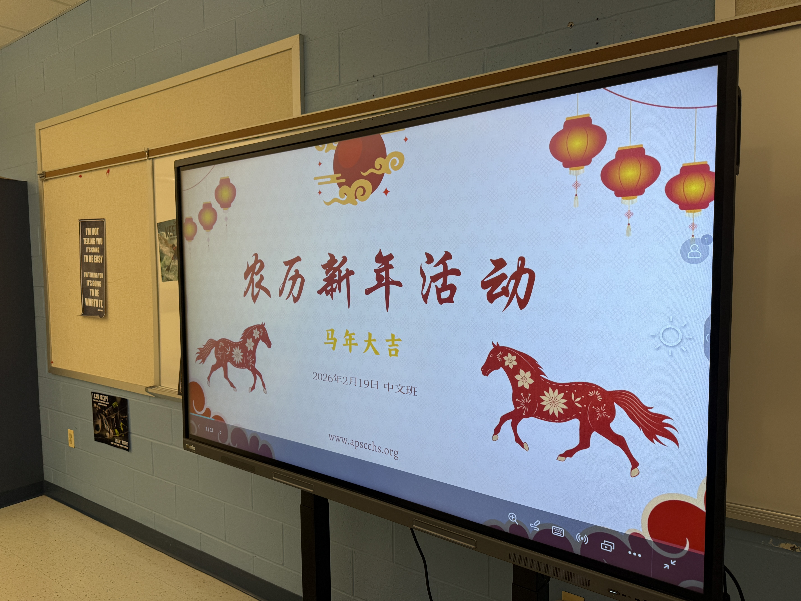

Our Activities & Events
Welcome to the heart of our community's journey. At the Asian Peer Support Club, our events are more than just gatherings—they are milestones of cultural celebration, personal growth, and mutual support.
From vibrant traditional festivals and academic workshops to casual bonding activities, every moment captured here reflects our dedication to fostering a welcoming environment. Explore our gallery to see how we build connections, empower our members, and create lasting memories together.

Cultural Exchange & Festival
A wonderful time full with delicious food and fun to celebrate the year of the fire horse together with our members and friends.

Strength in Unity
Our members standing together representing the diverse, inclusive, and highly supportive core of the Asian Peer Support Club.

Peer Tutoring Kickoff
Starting the semester strong with our collaborative study session where members help each other excel academically and build confidence.
Upcoming Event
Join us for our Chinese After School Program (CASP)! We're looking for dedicated volunteers to help teach and assist. Whether you're tutoring, mentoring, or assisting with activities, your contribution makes a meaningful difference in our younger generation's learning journey.
Past Event Archive
Looking for older activities or minor club meetings? We keep a record of everything we do. Browse our dedicated archive pages below to revisit our historical moments.
Partner with Us
We are always looking to collaborate with different clubs or organizations to co-host impactful events. If you are interested in creating something meaningful together, please do not hesitate to reach out via any of our contact methods.
Contact Us to Collaborate